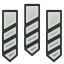
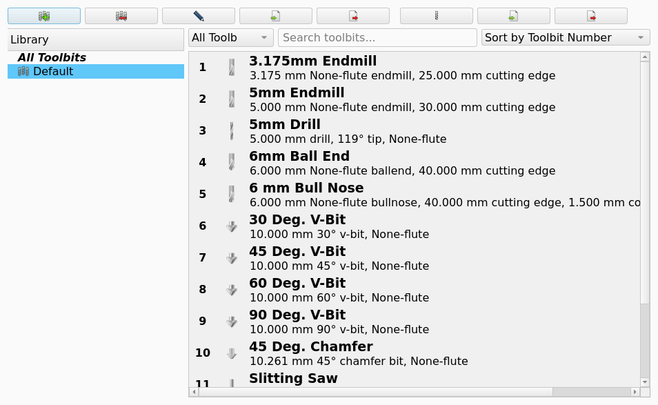
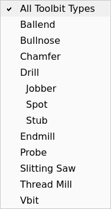
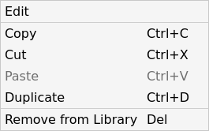

CAM ToolBitLibraryOpen
Toolbit Library Manager

CAM ToolBitLibraryOpen
None
0.19
Toolbit Dock, Tool Library, Tool Bit, (dialog rewritten in 1.1)
CAM ToolBitDock, CAM ToolBit Library, CAM ToolBit, CAM Tools
Description
The Toolbit Library Manager command opens the Library Manager, a modal dialog for creating, editing and organizing Tool Bits and Tool Libraries. introduced in 1.1: the dialog was rewritten. The command has no toolbar button; only Add Toolbit… is in the Tool Commands toolbar.
From here the user can perform all tasks related to Tool Bit management:
The Toolbit Library Manager command opens the Library Manager dialog.
The Library Manager is a modal dialog that creates, changes and arranges Tool Bits and Tool Libraries.
The left pane of the dialog lists each Tool Library, and the right pane lists the Tool Bits of the selected Tool Library.
The title of the dialog shows the selected Tool Library as Library Manager - <library name>.
The figure shows the dialog with the Default Tool Library selected.

The command has no toolbar button. The Tool Commands toolbar contains only the Add Toolbit… button of the Toolbit Dock command.
The Library Manager does these tasks:
Create, rename, remove, import and export a Tool Library.
libraries.Create, edit, duplicate, import and export a Tool Bit.
Add a Tool Bit to a Tool Library, remove a Tool Bit from a Tool Library, or delete a Tool Bit from the
Tool Bits.Add Tool Bits to libraries by copy/paste, cut/paste or drag and drop, remove them from a library, or delete them from disk.
Filter the Tool Bit list by type, search the list
list by Tool Bit type, searchby label, and sort the list by number or by label.
The library selected when the dialog is closed becomes the library shown by default in the Toolbit Selector.
Only the creation of new Tool Shapes cannot be done from the Library Manager. This is an advanced topic (see CAM ToolShape creation).
The left pane lists All Toolbits followed by every library in the asset directory; the toolbar above it has Adds a new library, Removes the library, Renames the library, Imports a library and Exports the library.
The right pane lists the Tool Bits of the selected library, each with its tool number, label, summary (for example 5 mm 2-flute endmill, 30 mm cutting edge) and shape icon; above it are a type filter (All Toolbit Types), a search box and a sort drop-down (Sort by Toolbit Number / Sort by Label), and the buttons Adds a toolbit, Imports a toolbit and Exports the toolbit.
The window title shows the selected library (Library Manager - <library name>); the asset directory is set in , not in the dialog. All changes are written to disk immediately; closing the dialog (also with Esc) does not undo anything.
Usage
-
There are several ways to open the Toolbit Library Manager:
-
Select the option from the menu.
-
Open the Toolbit Selector as described and press the Open Library Editor button.
-
-
Select a library in the left pane (or All Toolbits).
-
Use Adds a toolbit to create a Tool Bit, Imports a toolbit to add one from a file, or paste/drop Tool Bits copied from another library.
-
Double-click a Tool Bit (or select it and press F2) to edit it in the Toolbit Parameter Editor; the Tool Number field sets its number in the current library.
-
Right-click a Tool Bit for Edit, Copy (Ctrl+C), Cut (Ctrl+X), Paste (Ctrl+V), Duplicate (Ctrl+D), Remove from Library (Del; only when a library is selected) and Delete from disk (Shift+Del; only in All Toolbits).
-
Close the dialog. The selected library will become the default library for the Toolbit Selector.
Editing Toolbits
There are several ways to edit the Tool Bits and library:
-
Sorting: use the Sort by Toolbit Number / Sort by Label drop-down; the choice is remembered between sessions.
-
Tool number: double-click the Tool Bit and change Tool Number in the editor. Numbers are unique within a library; using a number already taken moves the other Tool Bit to the next free number.
-
Double-clicking a Tool Bit opens the Toolbit Parameter Editor, where the other properties of the Tool Bit can be edited.
Drag and drop
introduced in 1.1: Tool Bits can be dragged from the list onto a library in the left pane. The Tool Bit is added to the target library and, when the source is a library (not All Toolbits), removed from it. Dropping onto All Toolbits is not possible.
Filtering
The All Toolbit Types drop-down filters the list by shape type; 26.3 and later subtypes (for example Drill → jobber, stub, spot) are listed indented under their type. The search box matches the label, the summary and the type name.
Import
Imports a toolbit requires a library to be selected (message: Select a library first). Importing a library (.fctl or Camotics .json) also imports the Tool Bits it references if a Bit folder exists next to the file.
-
Open the Library Manager dialog with one of these controls:
-
Select .
-
Press Open Library Editor in the Toolbit Selector dialog. See Tool Library.
-
-
Select a Tool Library in the left pane, or select All Toolbits.
-
Add a Tool Bit with one of these controls:
-
Press Adds a toolbit to create a Tool Bit.
-
Press Imports a toolbit to add a Tool Bit from a file.
-
Paste or drop a Tool Bit that you copied or moved from a different Tool Library.
-
-
Double-click a Tool Bit to edit it in the Toolbit Parameter Editor dialog. As an alternative, select the Tool Bit and press F2.
-
Right-click a Tool Bit to open the context menu.
-
Close the dialog.
The Tool Library that is selected when you close the dialog becomes the default Tool Library of the Toolbit Selector dialog.
Options
Library list
The left pane lists the All Toolbits entry and then each Tool Library in the asset directory. The toolbar above the left pane has these buttons:
-
Adds a new library: creates a Tool Library.
-
Removes the library: removes the selected Tool Library.
-
Renames the library: changes the name of the selected Tool Library.
-
Imports a library: adds a Tool Library from a
.fctlfile or from a Camotics.jsonfile. -
Exports the library: writes the selected Tool Library to a file.
Tool Bit list
The right pane lists the Tool Bits of the selected Tool Library. Each row shows the number, the label, the summary and the shape icon of one Tool Bit. An example of a summary is 5 mm 2-flute endmill, 30 mm cutting edge.
The controls above the right pane are:
-
Type filter: shows only the Tool Bits of one shape type. Default:
All Toolbit Types. -
Search box: shows only the Tool Bits that have the text in the label, the summary or the type name.
-
Sort drop-down: sets the sequence of the list. Values:
Sort by Toolbit Number,Sort by Label. The CAM workbench keeps the selected value between sessions. -
Adds a toolbit: creates a Tool Bit and opens the Toolbit Parameter Editor dialog.
-
Imports a toolbit: adds a Tool Bit from a file to the selected Tool Library.
-
Exports the toolbit: writes the selected Tool Bit to a file.
introduced in 26.3: The type filter lists each subtype below its shape type, with an indent.
For example, the Drill type has the subtypes jobber, stub and spot.
See Tool Shape for the shape types and the subtypes.
The figure shows the open type filter of a Tool Library that has Tool Bits of these three subtypes.

The Toolbit Parameter Editor dialog changes the properties of one Tool Bit. The Tool Number field of the editor sets the number of the Tool Bit in the selected Tool Library. See Tool Bit for the other fields of the editor.
Context menu
A right-click on a Tool Bit opens a menu with these entries:
-
Edit: opens the Toolbit Parameter Editor dialog for the Tool Bit.
-
Copy (Ctrl+C): copies the Tool Bit.
-
Cut (Ctrl+X): copies the Tool Bit and removes it from the Tool Library.
-
Paste (Ctrl+V): adds the copied Tool Bit to the selected Tool Library.
-
Duplicate (Ctrl+D): makes a copy of the Tool Bit.
-
Remove from Library (Del): removes the Tool Bit from the Tool Library. The entry is available only when a Tool Library is selected.
-
Delete from disk (Shift+Del): deletes the file of the Tool Bit. The entry is available only when All Toolbits is selected.
The figure shows the context menu of a Tool Bit when a Tool Library is selected.

Notes and limitations
-
The Library Manager writes each change to the disk immediately. When you close the dialog, also with Esc, the changes stay.
-
sets the asset directory. The Library Manager does not set the asset directory.
-
The Library Manager does not create a Tool Shape. See Tool Shape for the procedure.
-
The number of a Tool Bit is unique in one Tool Library. When you enter a number that a different Tool Bit has, that Tool Bit moves to the next free number.
-
Imports a toolbit is applicable only when a Tool Library is selected. If no Tool Library is selected, the message Select a library first appears.
-
The import of a Tool Library also imports the Tool Bits of that library when a
Bitfolder is adjacent to the file.
introduced in 1.1: You can drag a Tool Bit from the list to a Tool Library in the left pane. The CAM workbench adds the Tool Bit to the target Tool Library. When the source is a Tool Library, the CAM workbench also removes the Tool Bit from the source. When the source is All Toolbits, the Tool Bit stays in all its Tool Libraries. You cannot drop a Tool Bit on All Toolbits.
introduced in 26.3: The import of a Camotics .json file reads the units key of each entry.
The value imperial gives the diameter and the length of the Tool Bit in inch.
The value metric gives the diameter and the length in mm.
When the units key is absent or has a different value, the import uses mm.
introduced in 26.3: The export to the Camotics format writes each Tool Bit in the unit system of the active unit schema of FreeCAD.
When the unit schema shows the diameter of the Tool Bit in an imperial unit, the export writes inch and the units value imperial.
In all other conditions, the export writes mm and the units value metric.
The decimals preference of FreeCAD sets the number of decimals of the diameter and the length in the file.